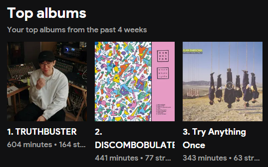
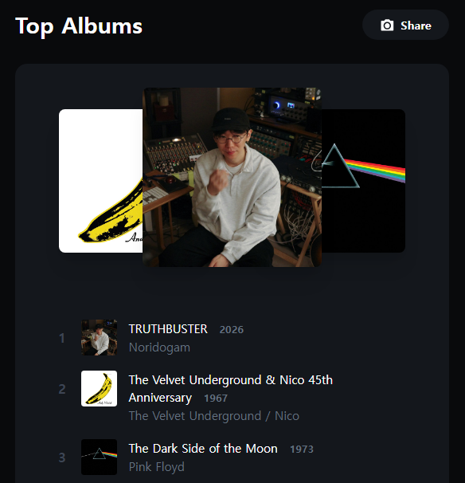

TRUTHBUSTER
고대하던 놀이도감의 2집 TRUTHBUSTER가 발매되었다. 발매일 자체는 3월 18일이었기 때문에 그 날에 바로 이에 대한 글을 작성하려고 했는데, 당일에 써야하는 다른 주제들이 계속 생기면서 오늘까지 미뤄지게 되었다. 반대로 생각하면, 오히려 그동안 앨범을 들을 시간을 벌 수 있었다.
실제로, 앨범이 나온지 일주일도 채 지나지 않았지만, stats.fm과 volt.fm 모두에서 최근 가장 많이 들은 앨범에 TRUTHBUSTER가 1위를 하게 되었다. 양쪽의 사이트는 랭킹을 계산하는 방식이 다르기 때문에 완전히 동일한 순위를 공유하지는 않는데, 양 사이트에서 모두 1위를 했다는 것은 요 며칠간 이 앨범만 미친듯이 들었다는 것을 의미한다.

이게 stats.fm의 순위,
이게 volt.fm의 순위이다.앨범에 대해 이야기해보자면, "기대한 느낌과는 달랐다"가 솔직한 감상이기는 하다. 개인적으로 1집을 정말정말 좋아했기 때문에 2집도 1집과 비슷한 느낌으로 나오길 바랐으나, 어쿠스틱한 느낌이 강했던 1집에 비해 2집은 재즈의 색채가 강했다. 하지만, 그렇다고 해서 취향에 맞지 않는 것은 아니다. 위에서 언급한 통계 사이트의 순위가 그것을 증명한다.
선공개된 Truthbuster와 Hazard Course는 말할 필요도 없고, 그 외 곡들도 모두 내 취향이었다. 그리고 이건 의도한 설계인지는 모르겠으나, 왠지 모르게 마지막 트랙인 3 Wanderers에서 첫 번째 트랙인 today, today로 이어지는 것 같기도 하다. 이야기의 에필로그이자 동시에 프롤로그로서의 역할도 하는 듯한 느낌이다.
앨범을 처음 들었을 때의 감상이 "기대한 것과 다르다" 였다면, 지금 시점에서의 감상은 "그럼에도 불구하고 놀이도감 다운 앨범"이라고 할 수 있을 것 같다. 앨범 자체의 분위기는 다르지만, 그 안에서 공유되는 놀이도감의 손맛이 느껴진다.